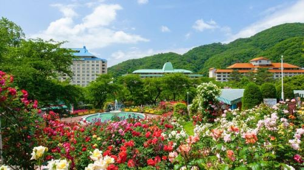
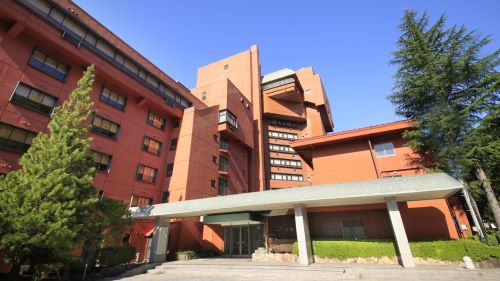

花巻市を代表する温泉。紅葉館や佳松園というホテルがあり、式典や天皇陛下が止まられるほどいいホテルです。温泉だけでなくきれいなバラ園や美味しいご飯も魅力的。アクセスも空港や駅から近く、県内外から幅広く人気な観光スポットです。
花巻駅から車で15分、少し山のほうで旅館や温泉が建て並ぶ場所です。どのホテルも源泉をもっていて泉質の良い温泉で、身も心も癒されます。秋には綺麗な紅葉が見られ、露天風呂の景色は格別です。サービスも料理も一級品なので是非行ってみて欲しいです。

盛岡にある旅館やホテルが並ぶ温泉街、つなぎ温泉。近くを流れる御所湖と緑豊かな地形に囲まれた素晴らしい温泉街です。県の中央にあるためほかの観光地へのアクセスも良く、親しまれています。